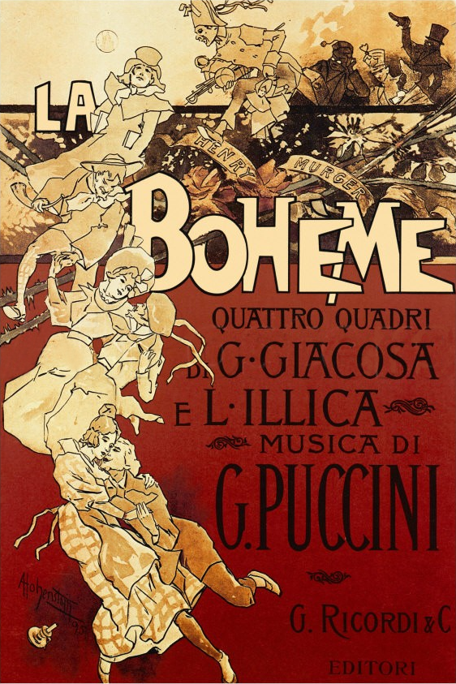
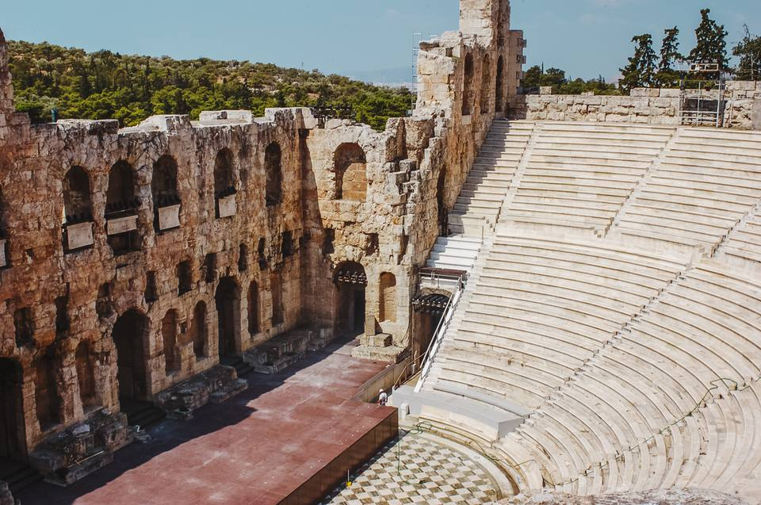
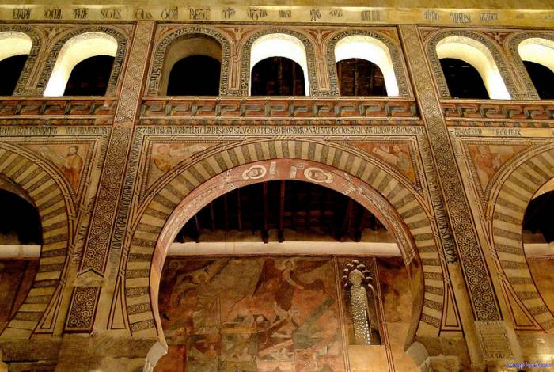

What Is Drama?
In literature, a drama is the portrayal of fictional or non-fictional events through the performance of written dialog (either prose or poetry). Dramas can be performed on stage, on film, or the radio. Dramas are typically called plays, and their creators are known as “playwrights” or “dramatists.”
Performed since the days of Aristotle (c. 335 BC), the term “drama” comes from the Greek words δρᾶμα (an act, a play) and δράω (to act, to take action). The two iconic masks of drama—the laughing face and the crying face—are the symbols of two of the ancient Greek Muses: Thalia, the Muse of comedy and Melpomene, the Muse of tragedy.
What Makes Drama so Dramatic?
To make their plays dramatic, playwrights strive to progressively build the audience’s feelings of tension and anticipation as the story develops. Dramatic tension builds as the audience keeps wondering “What happens next?” and anticipating the outcomes of those events. In a mystery, for example, dramatic tension builds throughout the plot until an exciting or unanticipated climax is revealed.
Dramatic tension is all about keeping the audience guessing. In the ancient Greek tragedy Oedipus the King, will Oedipus ever figure out that by killing his father and sleeping with his mother he had caused the plague that destroyed his city, and what will he do about it if he does? In Shakespeare’s Hamlet, will Prince Hamlet ever avenge his father’s death and get rid of his pesky ghost and visions of floating daggers by murdering the play’s antagonist Claudius?
Dramas depend heavily on spoken dialogue to keep the audience informed about the characters’ feelings, personalities, motivations, and plans. Since the audience sees characters in a drama living out their experiences without any explanatory comments from the author, playwrights often create dramatic tension by having their characters deliver soliloquies and asides.
Types of Drama
Dramatic performances are generally classified into specific categories according to the mood, tone, and actions depicted in the plot. Some popular types of drama include:
Comedy: Lighter in tone, comedies are intended to make the audience laugh and usually come to a happy ending. Comedies place offbeat characters in unusual situations causing them to do and say funny things. Comedy can also be sarcastic in nature, poking fun at serious topics. There are also several sub-genres of comedy, including romantic comedy, sentimental comedy, a comedy of manners, and tragic comedy—plays in which the characters take on tragedy with humor in bringing serious situations to happy endings.
The Taming of Shrew by William Shakespeare
Tragedy: Based on darker themes, tragedies portray serious subjects like death, disaster, and human suffering in a dignified and thought-provoking way. Rarely enjoying happy endings, characters in tragedies, like Shakespeare's Hamlet, are often burdened by tragic character flaws that ultimately lead to their demise.
Hamlet by William Shakespeare
Farce:Featuring exaggerated or absurd forms of comedy, a farce is a nonsensical genre of drama in which characters intentionally overact and engage in slapstick or physical humor. Examples of farce include the play Waiting for Godot by Samuel Beckett and the hit 1980 movie Airplane!, written by Jim Abrahams.
The Importance If Being Earnest by Oscar Wilde
Melodrama:An exaggerated form of drama, melodramas depict classic one-dimensional characters such as heroes, heroines, and villains dealing with sensational, romantic, and often perilous situations. Sometimes called “tearjerkers,” examples of melodramas include the play The Glass Menagerie by Tennessee Williams and the classic movie of love during the Civil War, Gone With the Wind, based on Margaret Mitchell’s novel.

The Glass Of Menagerie by Tennessee Williams
Opera:This versatile genre of drama combines theater, dialogue, music, and dance to tell grand stories of tragedy or comedy. Since characters express their feelings and intentions through song rather than dialogue, performers must be both skilled actors and singers. The decidedly tragic La Bohème, by Giacomo Puccini, and the bawdy comedy Falstaff, by Giuseppe Verdi are classic examples of opera.

La bohème
by Giacomo Puccini
Earliest Classical Greek Influences
The term ‘drama’ comes from an ancient Greek verb meaning ‘to do’ or ‘to act’, and this is when it all began for the tradition. Come to think of it, the literal meaning of this word is very apt in describing the activity, yet the word has evolved over time to offer different meanings since its beginning. For example, in today’s world, the word ‘drama’ is normally associated with situations that involve a conflict of emotions.
There were originally thought to be two types of drama: comedy and tragedy. That said, when you refer to dramas from the 19th century, this term actually refers to a staged theatrical performance that is neither one nor the other (thus the term took on a new meaning of its own).
Yet another genre of drama produced by ancient Greece was a satire, or satyr play
Ancient Greek theater would have been very dramatic (almost like a pantomime), consisting of a Greek chorus, costumes, theatrical masks, and other ritual characteristics all of which would have been staged in an open air setting.
If you hear anything along the lines of Agamemnon, Antigone, Agon, Apollo, Aristotle, Athenian, Attica, Bacchae, Epidaurus, Eumenides, Dionysus, Oedipus The King, Prometheus Bound, Parados, Perseus, Dithyrambic, Iphigenia, Seven Against Thebes, Lysistrata, Orestes, Peloponnesian, Parados, Plato, Socrates, Cyclops, Plautus, Thespis, Zeus, the list really does go on and on! And all have their own links to ancient world plays by way of mythology, Greek gods, Greek empire, a representation of religion or Greek society and culture. Greek theatre would have painted a picture of the legendary Greek empire.
The most significant playwrights of Greek tragedies are Aeschylus, Sophocles, Euripides, Aristophanes and Menander.
The first three dramatists are commonly referred to as tragedians, whilst the two latter lyricists were seen as comic writers. If you have read a Greek tragedy as part of one of your educational courses or because you are drawn to the suspense, you will be familiar with the chorus, or group of people, who commentate on the story as it unfolds.

Ancient Greek Theater
Roman Influences
Rome was introduced to Greek drama and Greek comedy around 250 BCE, and many Romans reworked the original plays, dividing the stories into episodes, removing the choruses and replacing them with a musical element like an orchestra, or having them singing.
The Roman times were still influenced by Greek gods and mythological Greek culture, but Roman theatre was equally expressive of themes significant to Rome, Sicily and society in Italy in general, as well as classical literature and religious rites. Performances would have been composed of Venetian masks, ceremonial dancing and stylized with a range of facial expressions.
Colosseum
Medieval And Renaissance Drama
Hundreds of years after the first ever creations of tragedy and comedy, Medieval Drama brought something totally new to theatre, in a move away from reworking older styles. With the Christian Church originally opposing theatre, seeing it as controversial, religious holiday stories and scenarios from the Bible naturally started to be performed by leaders of the churches, and eventually, these performances became more elaborate and moved to other parts of the community (i.e. the stage)

The Christian church originally opposed theatre
Elizabethan drama developed during the Renaissance period thanks to a rejuvenated celebration of all types of art. The first ever Elizabethan playhouse opened around this time and plays by famous playwrights (like the acclaimed William Shakespeare, of course) were performed regularly across the country. His plays were more structural than had ever been seen before, and represented comedy tragedy combined to give well-rounded performances offering something for everyone.
18th And 19th Century Drama
Classes were very much divided in the 18th century, and writers drew on this in their texts. Many plays were therefore written for and about the middle class, moving away from the outdated themes that were covered by Shakespeare and his peers. Plays played on the battle of the sexes and were witty and humorous.
In the 19th century, Romanticism in Western Europe was born and focused on emotion and spiritualism, heavily influencing drama of the period. Romantic plays began to dominate the continent, with famous writers like Faust and Johann Wolfgang von Goethe becoming hugely popular.
Modern Drama
Modern drama is what we would call many of the plays that emerged from the 20th century onwards, which developed due to further experimentation. Music played a big part in modern drama, while realistic drama was also increasingly popular. For some, though, this seemed a step too far from the origins of drama and theatre and they wanted the art to be revitalised once more.
A Modern Theater